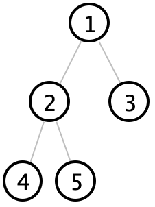

Assignment 14: Traversal
Goals: Practice creating and working with iterators.
You should submit one .java file containing the solution to this problem.
Be sure to properly test your code and write purpose statements for your methods. A lack of tests and documentation will result in a lower grade! Remember that testing requires you to make some examples of data in an examples class.
Traversing a binary tree
When going through the elements of a binary tree, there are various orders one can do this in.
Take this tree, for example:

Inorder traversal goes left, root, right. On this tree, that produces the order 4, 2, 5, 1, 3
Preorder traversal goes root, left, right. On this tree, that produces the order 1, 2, 4, 5, 3
Postorder traversal goes left, right, root. On this tree, that produces the order 4, 5, 2, 3, 1
Breadth first traversal goes by layer. On this tree, that produces the order 1, 2, 3, 4, 5
Note that the first three orders are all considered "depth first" traversals.
Your task
Do not modify any of the interfaces or abstract classes that already exist. You also do not need to add any fields to any of the given classes.
If next is called on these iterators when there is no next element, throw a NoSuchElementException.
Remember that iterators should never modify the data structure they are iterating over.
Like function objects, iterators are tightly coupled with the data type they iterate over. As such, it is fine to access the value or subtrees of a tree directly in your iterator.
You will find the Collections.emptyIterator() method useful.
Note that all of the trees in this assignment are non-empty.
DFS iterations
For DFS iterations, you should determine whether or not the left or right suberiterator has further elements to be processed, and whether or not the top-level value has already been iterated over, and choose what to next return accordingly.
Based on the specific order you are implementing, the order you check these in will differ.
BFS and queues
To implement breadth first search, keep track of a queue of nodes that have yet to be processed, starting with the root node. When processing a node, remove it from the queue, and put its subtrees (if any) at the end of the queue, and then return the element at its root. The traversal is over once the queue is empty.
A queue is a list where the first element in is the first element out. This is the opposite of a stack, where the first element in is the last element out (cons lists are an example of a stack).
You will only need to use the add method, which adds an element to the end of the queue, remove, which returns the first element from the queue and also removes it, and isEmpty.
Optional challenge
If you would like, devise a method which takes in the inorder and preorderal traversal of a tree in the form of arraylists (so for the above tree, it would take in the lists [4, 2, 5, 1, 3] and [1, 2, 4, 5, 3]) and recreate the original tree from just this information.